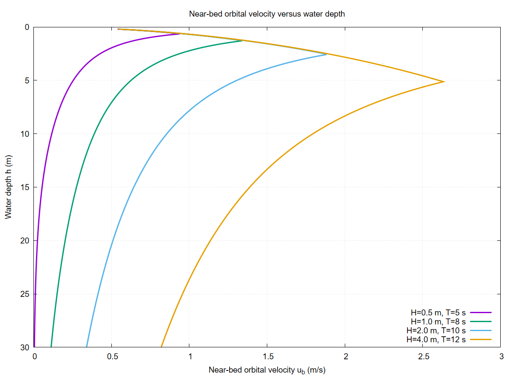
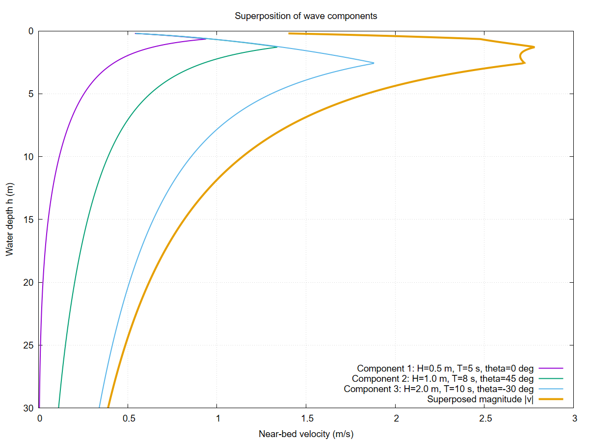
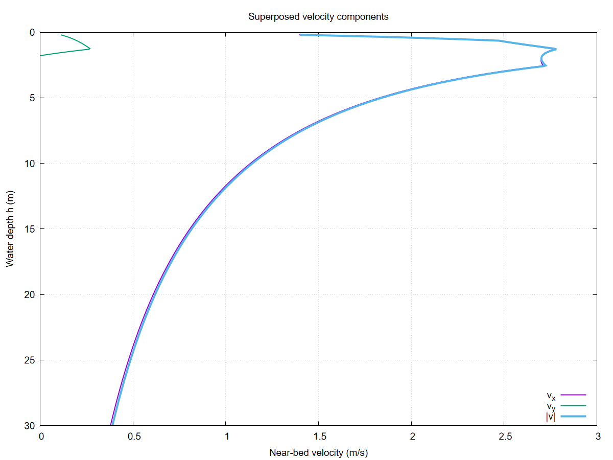

Wave Field
The WaveField module extends CarboKitten's wave transport with physically consistent wave dynamics based on linear (Airy) wave theory. It provides a callable AiryWaveField struct that plugs directly into the existing Facies.wave_velocity interface — no changes to the transport solver or active layer code are required.
Motivation
The original transport module represents wave action through a single depth-dependent velocity function wave_velocity(h) -> (velocity, shear). While flexible, this approach requires the user to hand-craft a closure for each scenario. The AiryWaveField type automates this by computing physically consistent near-bed orbital velocities from standard wave parameters (amplitude, period, direction).
Linear wave theory
Each wave component is defined by amplitude $H$, period $T$, propagation direction $\theta$, phase offset $\varphi_0$, and a base attenuation coefficient.
Dispersion relation
Wavelength is computed dynamically at each grid cell using the full dispersion relation:
\[\omega^2 = g k \tanh(k h)\]
where $\omega = 2\pi/T$ is angular frequency, $k$ is wave number, $g$ is gravitational acceleration, and $h$ is local water depth. The equation is solved numerically using a Newton–Raphson iteration with the deep-water approximation $k_0 = \omega^2/g$ as initial guess. This formulation ensures correct behavior across deep, intermediate, and shallow water regimes.
Depth-limited breaking
To prevent unrealistic growth in shallow water, wave height is limited by a breaker index formulation (McCowan criterion):
\[H_{\mathrm{eff}} = \min(H, \gamma_b \cdot h)\]
with $\gamma_b = 0.78$ by default, corresponding to the classical shallow-water breaking index. This prevents wave heights from exceeding approximately 78% of local water depth.
Near-bed orbital velocity
The near-bed orbital velocity amplitude is:
\[u_b = \frac{\pi H_{\mathrm{eff}}}{T \sinh(k h)}\]
This expression decays rapidly with depth and approaches deep-water behavior for large $kh$.

Multi-directional superposition
Multiple wave components can be superposed. The total near-bed velocity vector is:
\[\mathbf{v} = \sum_i u_{b,i} \, \hat{\mathbf{d}}_i\]
where $\hat{\mathbf{d}}_i = (\cos\theta_i, \sin\theta_i)$ is the propagation direction of component $i$.


Energy flux
Wave energy flux per unit crest length is:
\[E = \frac{1}{8} \rho g H_{\mathrm{eff}}^2 \, c_g\]
where group velocity $c_g = c \cdot n$ with phase velocity $c = \omega/k$ and the group velocity factor:
\[n = \frac{1}{2}\left(1 + \frac{2kh}{\sinh 2kh}\right)\]
Usage
The AiryWaveField is a drop-in replacement for the lambda-based wave_velocity closures. Existing closures (including the default no-transport and v_const) continue to work unchanged.
using CarboKitten.WaveField: AiryWaveField, AiryWaveComponent
# Single dominant swell from the west
wf = AiryWaveField(components=[
AiryWaveComponent(amplitude=1.5u"m", period=8.0u"s", direction=0.0),
])
# Multi-directional sea state
wf = AiryWaveField(components=[
AiryWaveComponent(amplitude=1.5u"m", period=8.0u"s", direction=0.0),
AiryWaveComponent(amplitude=0.5u"m", period=5.0u"s", direction=π/4),
], breaker_index=0.78)
# Plug into a facies definition
facies = ALCAP.Facies(
wave_velocity = wf,
transport_coefficient = 50.0u"m/yr",
...)Backward compatibility
The Facies.wave_velocity field accepts any callable with signature water_depth -> (Vec2{velocity}, Vec2{shear}). The existing lambda-based closures and v_const helpers satisfy this interface. AiryWaveField is simply a new callable that also satisfies it. No existing code changes, no dispatch ambiguity, no type constraints broken.
Implementation
module WaveField
using Unitful
using GeometryBasics
export AiryWaveComponent, AiryWaveField, energy_flux, group_velocity
# =============================================================================
# Types
# =============================================================================
"""
AiryWaveComponent(; amplitude, period, direction, phase=0.0, attenuation=0.0u"m^-1")
A single monochromatic wave component:
- `amplitude` — wave height H (crest-to-trough) in meters.
- `period` — wave period T in seconds.
- `direction` — propagation angle θ in radians (0 = +x, π/2 = +y).
- `phase` — phase offset φ₀ in radians.
- `attenuation` — spatial decay coefficient (e.g. for bottom friction).
"""
@kwdef struct AiryWaveComponent
amplitude::typeof(1.0u"m") = 1.0u"m"
period::typeof(1.0u"s") = 10.0u"s"
direction::Float64 = 0.0
phase::Float64 = 0.0
attenuation::typeof(1.0u"m^-1") = 0.0u"m^-1"
end
"""
AiryWaveField(; components, breaker_index=0.78, gravity=9.81u"m/s^2", density=1025.0u"kg/m^3")
A superposition of `AiryWaveComponent`s. Callable: `wf(water_depth)` returns
`(Vec2{velocity}, Vec2{shear})` compatible with the existing
`Facies.wave_velocity` interface in `Components.ActiveLayer`.
Existing lambda-based wave velocities (including the default no-transport
closure and `v_const`) continue to work — this type is an alternative, not
a replacement.
- `breaker_index` — γ_b for depth-limited breaking (default 0.78).
- `gravity` — gravitational acceleration.
- `density` — water density (for energy flux diagnostics).
"""
@kwdef struct AiryWaveField
components::Vector{AiryWaveComponent} = AiryWaveComponent[]
breaker_index::Float64 = 0.78
gravity::typeof(1.0u"m/s^2") = 9.81u"m/s^2"
density::typeof(1.0u"kg/m^3") = 1025.0u"kg/m^3"
end
# =============================================================================
# Dispersion relation
# =============================================================================
"""
solve_dispersion(ω, h, g; tol, maxiter) -> k
Solve ω² = g k tanh(k h) for wave number k using Newton–Raphson iteration,
starting from the deep-water approximation k₀ = ω²/g. All arguments are
plain Float64 in SI units.
"""
function solve_dispersion(ω::Float64, h::Float64, g::Float64;
tol::Float64=1e-8, maxiter::Int=50)
h <= 0.0 && return 0.0
k = ω^2 / g # deep-water initial guess
for _ in 1:maxiter
kh = k * h
th = tanh(kh)
f = ω^2 - g * k * th
df = -g * (th + k * h * (1.0 - th^2))
abs(df) < 1e-30 && break
dk = -f / df
k += dk
abs(dk) < tol * abs(k) && break
end
return max(k, 0.0)
end
# =============================================================================
# Per-component orbital velocity (all SI, no units)
# =============================================================================
"""
_orbital_velocity(H, T, k, h, γ_b) -> (u_b, H_eff)
Near-bed orbital velocity amplitude and depth-limited wave height.
All arguments in SI (m, s), returns (m/s, m).
"""
function _orbital_velocity(H::Float64, T::Float64, k::Float64, h::Float64, γ_b::Float64)
h <= 0.0 && return (0.0, 0.0)
# Depth-limited breaking
H_eff = min(H, γ_b * h)
# u_b = π H / (T sinh(kh))
kh = k * h
sh = sinh(max(kh, 1e-10))
u_b = π * H_eff / (T * sh)
return (u_b, H_eff)
end
# =============================================================================
# Velocity vector at a given depth (SI, no units)
# =============================================================================
function _velocity_si(wf::AiryWaveField, h::Float64)
g = ustrip(u"m/s^2", wf.gravity)
γ_b = wf.breaker_index
vx = 0.0
vy = 0.0
for comp in wf.components
H = ustrip(u"m", comp.amplitude)
T = ustrip(u"s", comp.period)
ω = 2π / T
k = solve_dispersion(ω, h, g)
u_b, _ = _orbital_velocity(H, T, k, h, γ_b)
vx += u_b * cos(comp.direction)
vy += u_b * sin(comp.direction)
end
return (vx, vy)
end
# =============================================================================
# Callable interface: (::AiryWaveField)(water_depth) -> (Vec2, Vec2)
# =============================================================================
"""
(wf::AiryWaveField)(water_depth)
Evaluate the wave field at `water_depth`. Returns
`(velocity::Vec2, shear::Vec2)` in units of m/s and 1/s respectively,
compatible with the `Facies.wave_velocity` interface.
Velocity is the vector sum of near-bed orbital velocity amplitudes directed
along each component's propagation direction. Shear is d(velocity)/d(depth),
computed by central finite differences.
"""
function (wf::AiryWaveField)(water_depth)
h = ustrip(u"m", water_depth)
vx, vy = _velocity_si(wf, h)
# Shear = dv/dh via central differences
δ = max(abs(h) * 1e-4, 1e-4)
vx_p, vy_p = _velocity_si(wf, h + δ)
vx_m, vy_m = _velocity_si(wf, max(0.0, h - δ))
sx = (vx_p - vx_m) / (2δ)
sy = (vy_p - vy_m) / (2δ)
return (Vec2(vx * u"m/s", vy * u"m/s"),
Vec2(sx * u"s^-1", sy * u"s^-1"))
end
# =============================================================================
# Diagnostics: group velocity and energy flux
# =============================================================================
"""
group_velocity(comp, h, g) -> c_g [m/s]
Group velocity from linear theory: c_g = c · n where
n = ½(1 + 2kh / sinh(2kh)) and c = ω/k.
"""
function group_velocity(comp::AiryWaveComponent, h_m::Float64, g::Float64)
T = ustrip(u"s", comp.period)
ω = 2π / T
k = solve_dispersion(ω, h_m, g)
k <= 0.0 && return 0.0
kh = k * h_m
c = ω / k
n = 0.5 * (1.0 + 2kh / sinh(max(2kh, 1e-10)))
return c * n
end
"""
energy_flux(wf::AiryWaveField, water_depth) -> E [W/m]
Total wave energy flux per unit crest length from all components:
E = Σ (1/8) ρ g H_eff² c_g
"""
function energy_flux(wf::AiryWaveField, water_depth)
h = ustrip(u"m", water_depth)
g = ustrip(u"m/s^2", wf.gravity)
ρ = ustrip(u"kg/m^3", wf.density)
γ_b = wf.breaker_index
E = 0.0
for comp in wf.components
H = ustrip(u"m", comp.amplitude)
T = ustrip(u"s", comp.period)
ω = 2π / T
k = solve_dispersion(ω, h, g)
_, H_eff = _orbital_velocity(H, T, k, h, γ_b)
c_g = group_velocity(comp, h, g)
E += (1.0 / 8.0) * ρ * g * H_eff^2 * c_g
end
return E * u"W/m"
end
endTests
module AiryTest
using Unitful
using CarboKitten
using CarboKitten.WaveField: AiryWaveField, AiryWaveComponent, energy_flux
# ── 1. Basic sanity: single swell ──────────────────────────────────────
wf = AiryWaveField(components=[
AiryWaveComponent(amplitude=1.5u"m", period=8.0u"s", direction=0.0),
])
# Evaluate at several depths
for h in [5.0, 10.0, 20.0, 50.0, 100.0]
v, s = wf(h * u"m")
E = energy_flux(wf, h * u"m")
println("h=$(h)m v=$(v) shear=$(s) E=$(E)")
end
# ── 2. Verify breaking: velocity should plateau in very shallow water ──
v_deep, _ = wf(50.0u"m")
v_shallow, _ = wf(0.5u"m")
println("\nDeep velocity: $(v_deep)")
println("Shallow velocity (depth-limited): $(v_shallow)")
# ── 3. Multi-directional sea state ─────────────────────────────────────
wf2 = AiryWaveField(components=[
AiryWaveComponent(amplitude=1.5u"m", period=8.0u"s", direction=0.0),
AiryWaveComponent(amplitude=0.5u"m", period=5.0u"s", direction=π/4),
AiryWaveComponent(amplitude=0.3u"m", period=12.0u"s", direction=-π/6),
])
v, s = wf2(10.0u"m")
println("\nMulti-directional at 10m: v=$(v) shear=$(s)")
# ── 4. Plug into ALCAP facies (backward compat demo) ───────────────────
input = ALCAP.Input(
tag = "airy-wave-test",
box = Box{Coast}(grid_size=(50, 25), phys_scale=150.0u"m"),
time = TimeProperties(Δt=0.0002u"Myr", steps=1000),
output = Dict(
:profile => OutputSpec(slice=(:, 13), write_interval=1)),
ca_interval = 1,
initial_topography = (x, y) -> -x / 300.0,
sea_level = t -> 4.0u"m" * sin(2π * t / 0.2u"Myr"),
subsidence_rate = 50.0u"m/Myr",
disintegration_rate = 50.0u"m/Myr",
lithification_time = 100.0u"yr",
insolation = 400.0u"W/m^2",
sediment_buffer_size = 50,
depositional_resolution = 0.5u"m",
facies = [ALCAP.Facies(
viability_range = (4, 10),
activation_range = (6, 10),
production = ALCAP.Example.FACIES[1].production,
transport_coefficient = 50.0u"m/yr",
wave_velocity = wf,
name = "airy-swell")])
mkpath("data/output")
run_model(Model{ALCAP}, input, "data/output/airy-wave-test.h5")
println("\nModel run complete → data/output/airy-wave-test.h5")
end